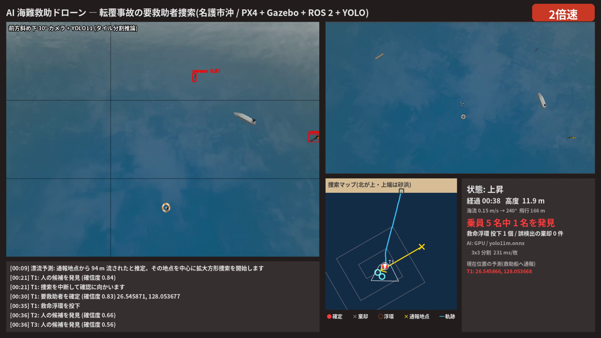
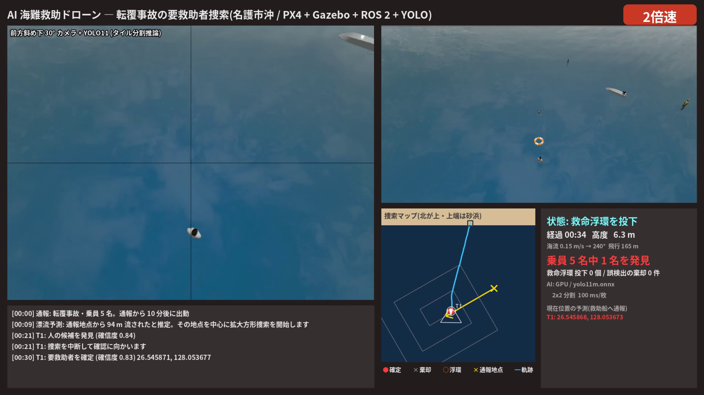
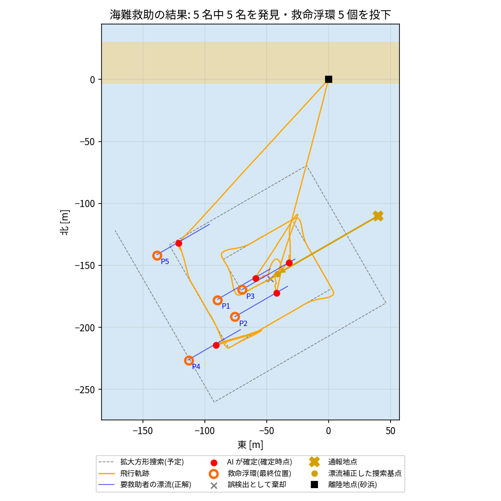

海で人が流されると、時間とともに通報された地点から離れていきます。早く見つけて浮力のあるものを届けることが、生存に直結します。 この課題では、ドローンが流された位置を予測して自律的に捜索し、AI で漂流者を見つけて確かめ、救命浮環を投下するシステムを作りました。 陸上の災害を想定して作った「AI 捜索ドローン」を土台に、海特有の課題に取り組みました。海特有の課題は、対象が動くこと、捜索の起点を推定する必要があること、物を届ける必要があることです。
| 状態 | 動作 |
|---|---|
| 漂流予測 | 通報地点 + 海流 × (通報からの経過時間 + 到着までの時間)を捜索の基点にする |
| 拡大方形捜索 | IAMSAR の捜索パターン。基点から 1S, 1S, 2S, 2S, … と右回りに広げる。S はカメラの撮影幅の 75%(32 m) |
| 発見・再確認 | 確信度 0.45 以上で候補にする。高度 10 m で再確認し、確信度 0.6 以上を 2 回検出したら確定。確定できなければ棄却する |
| 救命浮環の投下 | 予測位置の真上の高度 6 m で 1.5 秒静止して投下する。終わったら捜索へ戻る。乗員 5 名を全員確定したら帰還する |
通報から 10 分たつと、要救助者は約 100 m 流されています。カメラが一度に見られるのは前方 50 m ほどなので、通報地点をそのまま探しても見つかりません。 捜索の基点は、海流の予報 × 経過時間だけずらしました。これで、基点と要救助者の集団の中心との距離は約 107 m から約 15 m に縮まり、出動から 31 秒で最初の 1 名を確定できました。 基点のまわりは、国際的な捜索救助マニュアル(IMO・ICAO の IAMSAR マニュアル)にある拡大方形捜索で、近い所から順に外側へ探します。
見つけた人も、確かめている間や投下の準備中に流されていきます。そこで候補は「推定した位置と時刻」の組として持ちます。
照合・接近・投下では「経過時間 × 海流」を足した予測位置を使い、確定位置は近距離での観測を同じ時刻に揃えてから平均しました。
投下装置(payload ノード)は、機体の下に救命浮環を出現させ、自由落下(z = h − g t²/2)させて海面に浮かべます。その後は、浮環も海流で流します。
Gazebo には浮力の計算が無いため、浮環は重力を切ったモデルにし、動きをノードから与えています。

評価用の truth_logger.py が、Gazebo から要救助者と浮環の本当の位置を 0.5 秒ごとに記録します。ミッションの報告書とは時刻で照合しています。
要救助者は動いているので、評価用のスクリプトは確定・投下の時刻の位置を補間して比べます。この記録は AI と制御には一切使っていません。
| 1回目 | 2回目 | 3回目 | |
|---|---|---|---|
| 発見した要救助者 | 5 / 5 | 5 / 5 | 5 / 5 |
| 誤った確定 / 誤検出として棄却 | 0 / 0 | 0 / 1 | 0 / 1 |
| 確定位置の誤差 平均 / 最大 | 0.45 / 0.77 m | 0.49 / 0.92 m | 0.65 / 0.99 m |
| 救命浮環と要救助者の距離 平均 / 最大 | 0.51 / 0.87 m | 0.45 / 1.07 m | 0.65 / 1.19 m |
| 最初の 1 名 / 全員を確定するまで | 31 / 161 s | 31 / 174 s | 31 / 189 s |
| 飛行時間 / 飛行距離 | 216 s / 1021 m | 229 s / 1024 m | 240 s / 1094 m |

3 回とも、乗員 5 名全員を誤りなく発見しました。救命浮環は 15 個すべてが要救助者から 1.2 m 以内に落ちました。手を伸ばして届く目安の 2 m 以内に収まっています。 ブイなどの誤検出の候補は、降下して再確認する段階で棄却できました。
漂流補正がなければ、最初の数分は通報地点のまわりを空振りで探すことになります。補正した基点から探し始めたので、最初の 1 名を 31 秒で確定でき、全員の確定まで 3 分ほどでした。
遅く見つかった人ほど位置の誤差がやや大きい(最大 0.99 m)傾向がありました。 海流は設定どおりの速さ(0.150 m/s)で流れていることを確認したので、漂流予測のずれではありません。原因の切り分けは今後の課題です。
PX4-Autopilot v1.18(SITL、自作の機体設定 4099)、Gazebo Harmonic 8(VelocityControl、ShaderParam による海面)、ROS 2 Humble、 Micro XRCE-DDS、ros_gz_image、gz-transport(Python)、Ultralytics YOLO11m / YOLO11s(COCO 学習済み、ONNX に変換。追加の学習はしていない)、 ONNX Runtime GPU 1.20、OpenCV、Pillow、matplotlib、Gazebo Fuel のモデル(人・ボート・桟橋・漁船・ブイ・海面)。 検証環境は Ubuntu 22.04 と NVIDIA RTX 3060 Laptop GPU です。